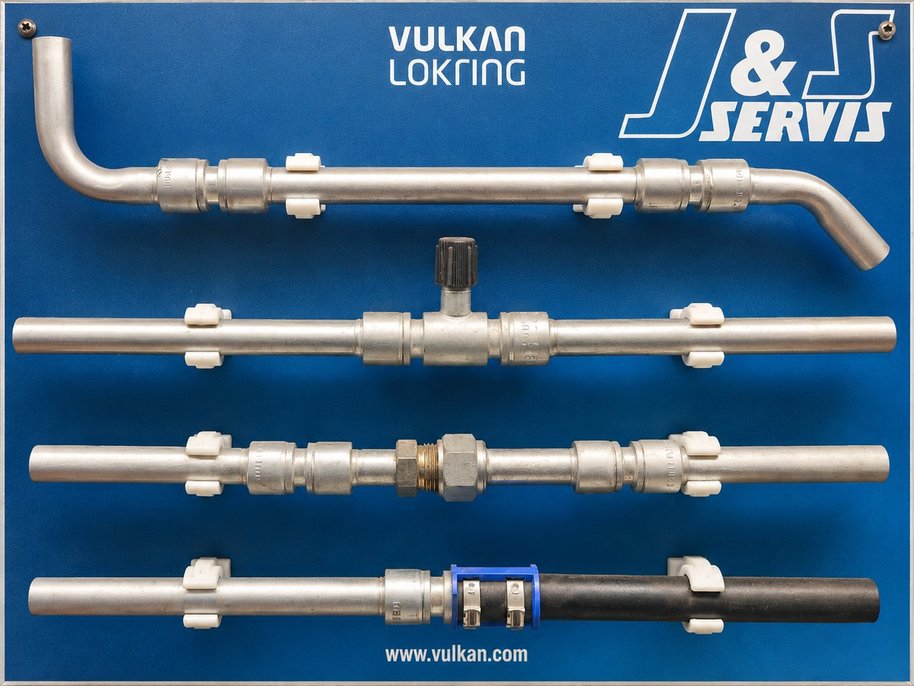

Điều hòa không khí – chẩn đoán, nạp môi chất lạnh và vệ sinh

Dịch vụ điều hòa ô tô chuyên nghiệp
Từ năm 1994, J&S SERVIS chuyên về xe Volkswagen, Audi, Škoda, SEAT và CUPRA. Chúng tôi chẩn đoán, bảo dưỡng, nạp môi chất lạnh, vệ sinh và sửa chữa hệ thống điều hòa sử dụng R134a, R1234yf và R744 (CO₂).
Chúng tôi sử dụng hệ thống ODIS cho các chức năng chẩn đoán và dịch vụ được quy định.
Chúng tôi kiểm tra, bảo trì và lấp đầy hệ thống điều hòa bằng thiết bị dịch vụ chuyên dụng. Một phần của dịch vụ chuyên nghiệp là kiểm tra chức năng điều hòa không khí, thu hồi và nạp lại môi chất lạnh theo thông số của nhà sản xuất xe, đồng thời kiểm tra độ kín theo quy trình quy định.
R134a – dịch vụ điều hòa cho xe cũ
R134a là môi chất lạnh được sử dụng trong nhiều xe cũ. Đối với các hệ thống được thiết kế cho nó bởi nhà sản xuất, chúng tôi cung cấp kiểm tra chức năng, dịch vụ và sửa chữa. Chúng tôi xác định lượng môi chất nạp và dầu máy nén cần thiết theo các thông số kỹ thuật của xe cụ thể.
Khi điều hòa làm lạnh kém hoặc nghi ngờ rò rỉ, chúng tôi đề xuất chẩn đoán phù hợp. Chỉ nạp bổ sung môi chất lạnh không khắc phục được chỗ rò rỉ hoặc hư hỏng khác của hệ thống.
R1234yf – dịch vụ bảo dưỡng điều hòa cho xe đời mới
R1234yf được sử dụng trong nhiều xe đời mới và có tiềm năng làm nóng lên toàn cầu thấp hơn đáng kể so với R134a. Môi chất này đòi hỏi thiết bị bảo dưỡng chuyên dụng và phải tuân thủ các quy trình làm việc tương ứng.
Tại J&S SERVIS, chúng tôi thực hiện kiểm tra, phục vụ và sửa chữa theo yêu cầu của nhà sản xuất xe. Chúng tôi luôn kiểm tra loại môi chất lạnh cho một chiếc xe cụ thể; năm sản xuất một mình không phải là một cơ sở đầy đủ để xác định nó.
R744 (CO₂) bảo dưỡng chuyên sâu hệ thống điều hòa và bơm nhiệt
R744 là chỉ định cho carbon dioxide được sử dụng như chất làm lạnh. Nó có thể được tìm thấy trong các hệ thống điều hòa không khí và bơm nhiệt của xe, bao gồm một số xe điện.
Các hệ thống này hoạt động ở áp suất cao hơn đáng kể so với điều hòa dùng R134a hoặc R1234yf, vì vậy cần thiết bị dịch vụ chuyên dụng và quy trình phù hợp. Tại J&S SERVIS, chúng tôi sử dụng thiết bị dành cho R744 và hệ thống ODIS chính hãng cho các chức năng chẩn đoán và bảo dưỡng liên quan. Phạm vi công việc được xác định theo hệ thống cụ thể và tài liệu của nhà sản xuất.
Chúng tôi phục vụ hệ thống điều hòa không khí áp suất cao và bơm nhiệt cho các loại xe điện được chọn của Tập đoàn Volkswagen.
Theo kết cấu của xe cụ thể và quy trình của nhà sản xuất, chúng tôi thực hiện điều khiển van có hỗ trợ chẩn đoán, xả áp suất mạch một cách an toàn, hút chân không, nạp đúng lượng môi chất lạnh quy định và kiểm tra chức năng của hệ thống.
Dịch vụ tiêu chuẩn R744 bao gồm công, môi chất lạnh và các bước chẩn đoán cần thiết. Giá có trong bảng giá dịch vụ. Phạm vi và giá công việc bổ sung được thống nhất trước với bạn.

Chúng tôi chỉ sử dụng loại môi chất lạnh được nhà sản xuất quy định cho chiếc xe cụ thể. Không thể dùng R134a, R1234yf và R744 thay thế lẫn nhau khi nạp bổ sung thông thường.
Dịch vụ cơ bản của máy điều hòa không khí R134a và R1234yf
- Thu hồi môi chất lạnh và kiểm tra số lượng.
- Hút chân không mạch điều hòa.
- Nạp lượng môi chất lạnh theo quy định.
- Kiểm tra chức năng điều hòa sau khi bảo dưỡng.
Giá dịch vụ cơ bản R134a và R1234yf có trong bảng giá dịch vụ. Môi chất lạnh nạp bổ sung được tính phí riêng theo lượng thực tế và đơn giá hiện hành. Chẩn đoán chuyên sâu và sửa chữa không nằm trong giá cơ bản.
Sửa chữa đường ống điều hòa
Chúng tôi thực hiện sửa chữa ống điều hòa bằng công nghệ VULKAN LOKRING.
Chúng tôi không sử dụng công nghệ này cho hệ thống R744 (CO₂).



Làm sạch, khử trùng, chẩn đoán và sửa chữa
- Vệ sinh điều hòa bằng hóa chất dạng bọt, khử trùng và xử lý ozone khoang nội thất.
- Phát hiện rò rỉ môi chất lạnh và kiểm tra áp suất theo quy định của nhà sản xuất.
- Chẩn đoán hệ thống điều hòa không khí và quản lý nhiệt của xe hybrid và xe điện.
Việc làm sạch, khử trùng, chẩn đoán và sửa chữa được tính riêng theo phạm vi công việc thực hiện.
Chúng tôi thực hiện tất cả các hoạt động dịch vụ theo quy trình dịch vụ của nhà sản xuất chiếc xe cụ thể.
Trước khi đặt lịch
Giá bảo dưỡng cơ bản không phải giá sửa rò rỉ hay hư hỏng khác. Trước khi bắt đầu, hãy xác nhận cả giá và lượng môi chất lạnh cần bổ sung. Với xe hybrid và xe điện, phạm vi công việc cụ thể cần được xác nhận trước; dịch vụ điều hòa không mở rộng phạm vi đã nêu sang sửa pin cao áp hoặc can thiệp vào các bộ phận cao áp.